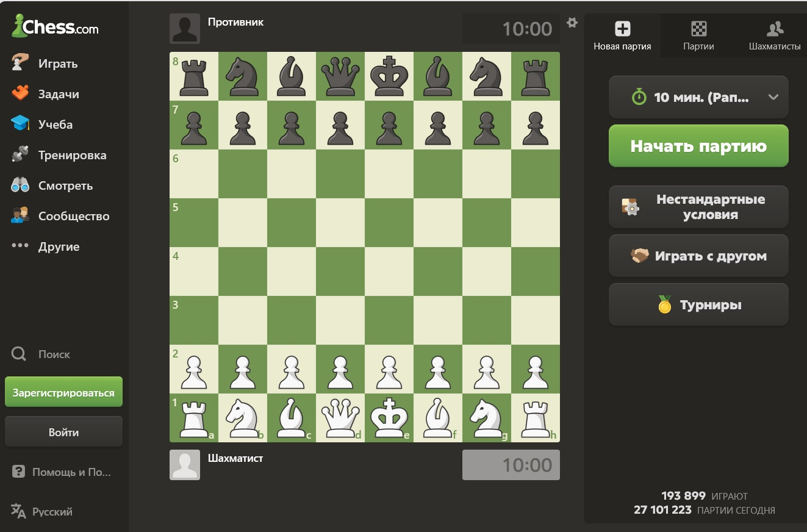
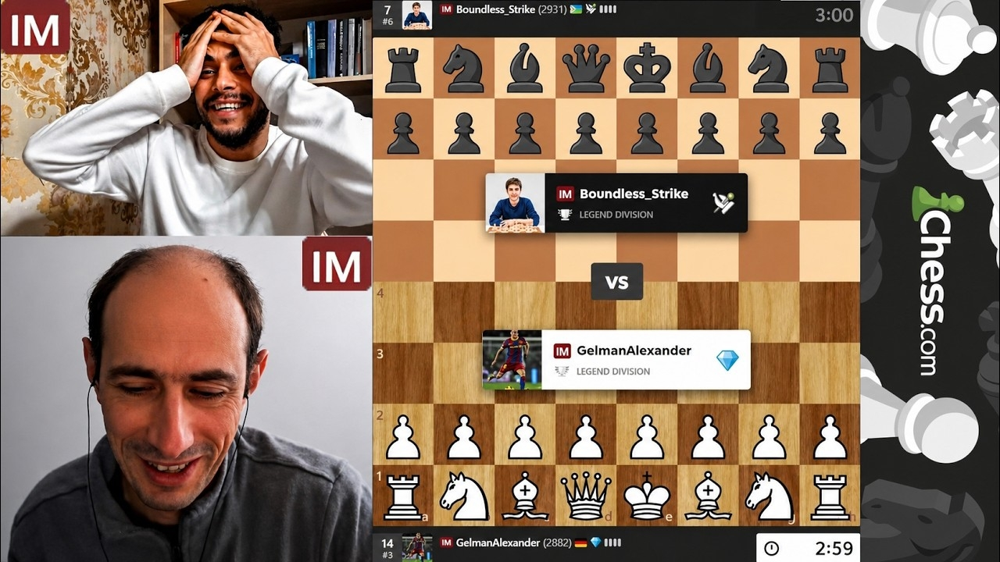

Где играть и учиться: лучшие шахматные ресурсы
Платформы, программы и сайты, которые должен знать каждый шахматист.
Введение
Шахматы в интернете — это не только игра на рейтинг. Это огромная экосистема, где можно найти соперника любого уровня, проанализировать свою партию с помощью суперкомпьютера, решить тысячи задач и посмотреть трансляции турниров. Мы собрали главные ресурсы, которые сэкономят твое время и сделают обучение эффективным.
1. Где играть онлайн
Lichess.org
Сайт: lichess.org
Полностью бесплатная платформа с открытым исходным кодом. Здесь нет рекламы, платных подписок и ограничений. Lichess предлагает отличный интерфейс, встроенный анализ партий, турниры и даже возможность играть в шахматы 960 (Фишера). Идеальный выбор для тех, кто ценит чистоту и удобство.
Chess.com
Сайт: chess.com
Крупнейшая шахматная платформа в мире. Здесь играют десятки миллионов человек, включая большинство топовых гроссмейстеров. Удобные приложения, обилие обучающих видео, блоги и трансляции. Часть функций платная (например, неограниченный анализ или продвинутые уроки), но базовой игры достаточно.

2. Программы и движки для анализа
Stockfish
Где скачать: stockfishchess.org
Самый сильный шахматный движок в мире с открытым исходным кодом. Он бесплатен и постоянно обновляется. Stockfish используется для анализа партий, проверки дебютных идей и подготовки к турнирам. Его рейтинг на сотни пунктов Эло выше, чем у любого человека.
Leela Chess Zero (LC0)
Где скачать: lczero.org
Нейросетевой движок, который учился играть самостоятельно, без человеческих партий. В отличие от Stockfish, Leela играет в более «человеческом» стиле, часто выбирая неожиданные и креативные ходы. Отличный инструмент для тех, кто хочет понять интуитивную сторону шахмат.
3. Обучение и решение задач
ChessTempo
Сайт: chesstempo.com
Один из лучших сайтов для тренировки тактики. Здесь собраны миллионы задач на тактические приемы: вилки, связки, маты. Задачи адаптируются под ваш уровень, а статистика показывает, какие темы вы знаете лучше, а какие стоит подтянуть.
Chessable
Сайт: chessable.com
Платформа для изучения шахматных курсов и книг с помощью интервальных повторений. Это как Duolingo для шахмат: вы не просто читаете книгу, а отрабатываете ходы на доске, пока они не отложатся в долговременной памяти.
4. Видео и стримы
Если вам больше нравится смотреть, чем читать, обратите внимание на видеоконтент:
- YouTube: Каналы гроссмейстеров (например, GothamChess, Daniel Naroditsky) предлагают разборы партий, ловушки в дебютах и понятные объяснения для новичков.
- Twitch: Здесь можно в прямом эфире смотреть, как играют топовые шахматисты, такие как Хикару Накамура. Они часто комментируют свои партии и общаются со зрителями.
- Champions Chess Tour: Официальные трансляции онлайн-турниров с призовыми фондами в миллионы долларов.

Интересные факты о ресурсах
- Lichess полностью существует на пожертвования пользователей и не показывает рекламу.
- Stockfish распространяется бесплатно, но по силе игры превосходит любого гроссмейстера.
- База задач на ChessTempo насчитывает более 4 миллионов позиций.
- Самые популярные шахматные стримы на Twitch собирают больше зрителей, чем трансляции некоторых киберспортивных турниров.
Что дальше?
📜 История шахмат — как игра дошла до наших дней
♟ Правила игры — если ты только начинаешь
🎬 Легендарные партии — вдохновись великими комбинациями
📖 Шахматный словарь — разберись в терминах